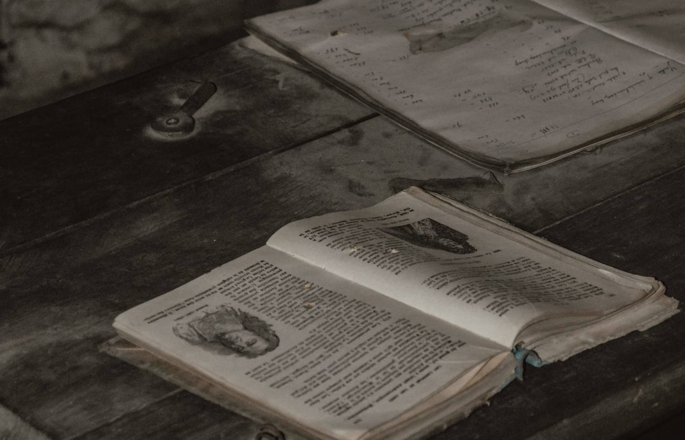

[PLACEHOLDER IMAGE, NOT HOLY FAMILY]
Sowing Seeds
SOW A SEED (Genesis 8:22)
We’re living in an unprecedented time – the corona virus pandemic, wars throughout our world, economic uncertainty, impacts all of us and the financial situation some families find themselves in – is overwhelming. For many children, faith formation will serve them for a lifetime, unfortunately, not all families can afford the fees.
PLEASE CONSIDER A FINANCIAL DONATION! Donations are meant to support the Faith Formation for Children Ministry at Holy Family.
In gratitude, your gift will be acknowledged in the bulletin or if you prefer, you will remain anonymous. This simple acknowledgement affirms your willingness to share in the mission of forming disciples.
Blessings!
Charitable gifts are tax-deductible and can be offered in any amount. Gifts can be made online here
or sent to:
Holy Family Religious Education
and Faith Formation for Children
1527 Fremont Ave
South Pasadena, 91030